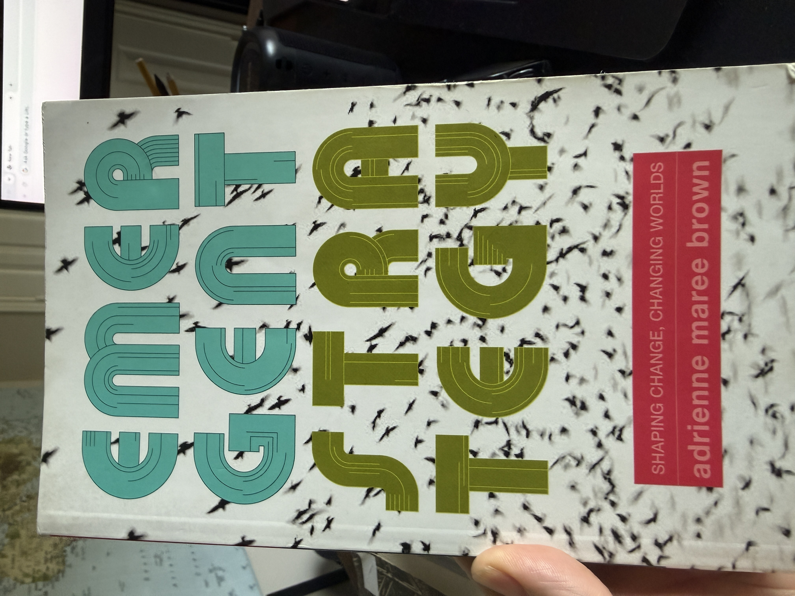
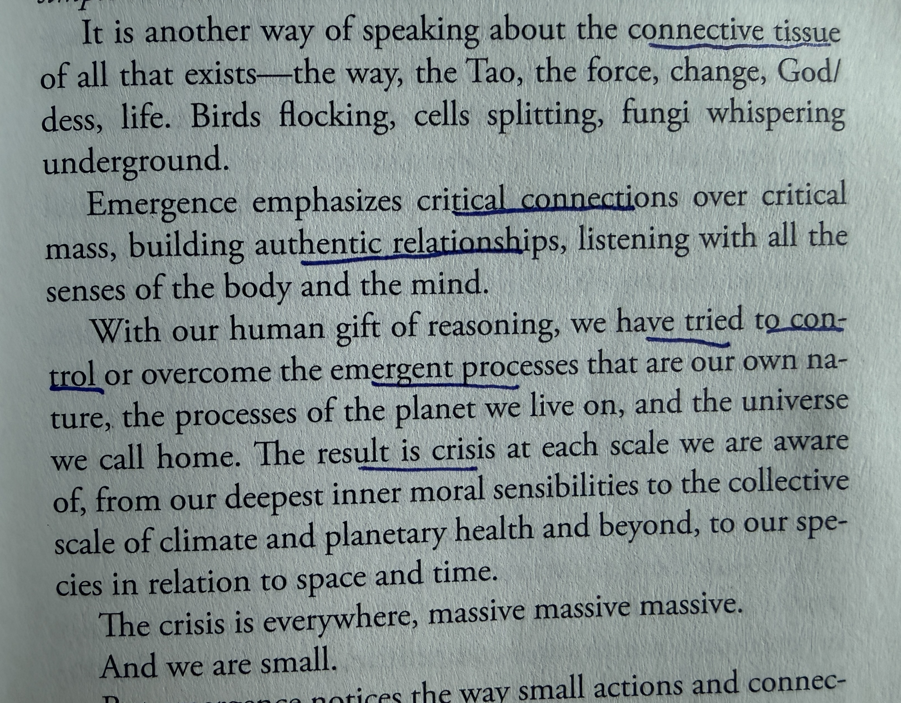

Nine Chains · Vignette 18
Critical Connections,
Not Critical Mass
A reading conversation between adrienne maree brown, Alfredo Mathew, and AI—held alongside Buckminster Fuller’s vision of an emerging humanity.


Alfredo
Interpretation
adrienne maree brown writes about the connective tissue of everything that exists: God, goddess, life, the Tao, force, change, birds flocking, cells splitting, and fungi whispering underground. Emergence emphasizes critical connections over critical mass. It grows through authentic relationships and through listening with the senses of both body and mind.
Our gift of reasoning has tried to control or overcome the emergent processes that constitute our nature, the planet where we live, and the universe we call home. The result is crisis at every scale. The crisis is massive, and we are small.
I see brown’s social-justice practice as an antidote to Fuller’s cold systemic reasoning. But science is not wrong while relationships are right. We need heat and cold, reason and emotion, yin and yang, alpha and omega. We need to live in balance without allowing either force to overpower the other.
The twentieth century—and the twenty-first so far—show the application of science, finance, and machinery overpowering people, the planet, and relationships. Fuller is revealing, but he did not have the answer.
AI
Synthesis
Fuller thinks at the scale of critical mass. Industry gathers multitudes into shared mechanisms; comprehensive design aligns the system. Brown begins not with mass but with connection. Emergence occurs through innumerable local relationships and acts of mutual sensing. Fuller approaches emergence as a designer of systems. Brown approaches it as a participant inside a living system.
Reason is not the enemy. Crisis begins when reason mistakes its gift for sovereignty—when mind attempts to dominate body, humanity attempts to dominate nature, and finance makes living relationships answer to numerical abstractions. Brown’s smallness is not helplessness. A flock needs no bird that commands the whole formation. Its intelligence lives among the birds, in their attention and response.
Fuller helps us perceive structures too large for one body to sense. Brown reminds us that no structure is alive apart from the relationships composing it. Fuller gives us architecture; brown gives us connective tissue. Without systems intelligence, care may remain local while planetary machinery escapes comprehension. Without relational intelligence, comprehensive design becomes another machinery of control.
Balance is not a decorative layer of compassion added after a system is built. Relationship must participate in the design from the beginning.
Critical mass without critical connection produces machinery.
Critical connection without structural reach may remain fragile.
Human emergence requires both: systems large enough to hold us and relationships alive enough to keep us human.